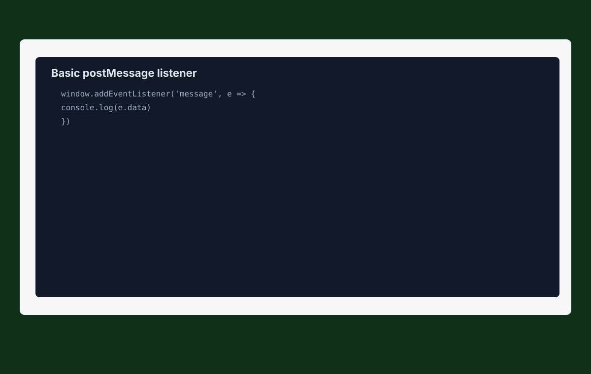
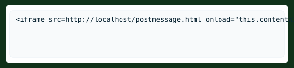
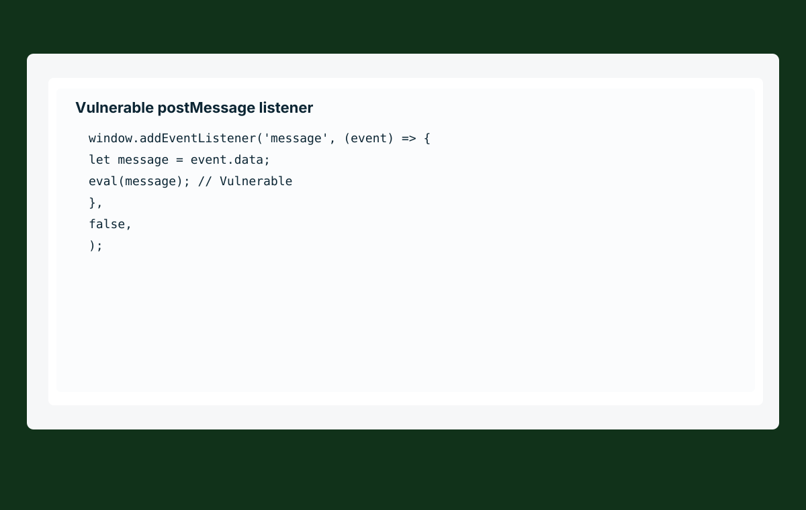
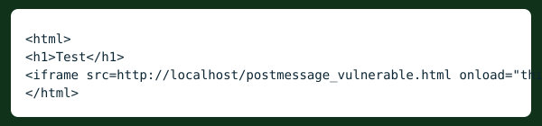
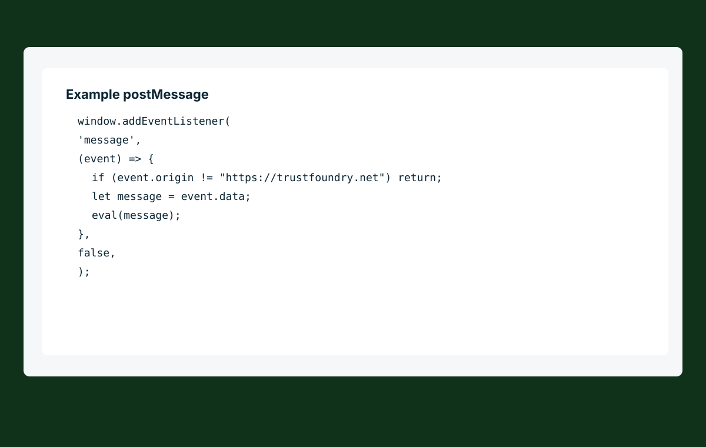
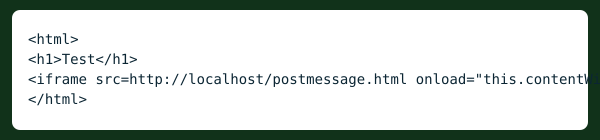

Level 0
Basic example of postMessage listener:

Example of how to send info to a listener:

Hi = message
* = originBasic postMessage vulnerability:

Here the message it recieves will be passed throigh an eval function, leading to XSS. To exploit this XSS we must do a web page that sends a postMessage to the listener:

Level 1
Vulnerable listener :

The eval function will only be executed if the origin from the post message is "https://trustfoundry.net"

LABS: